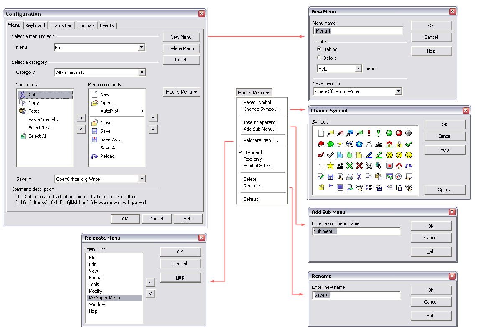
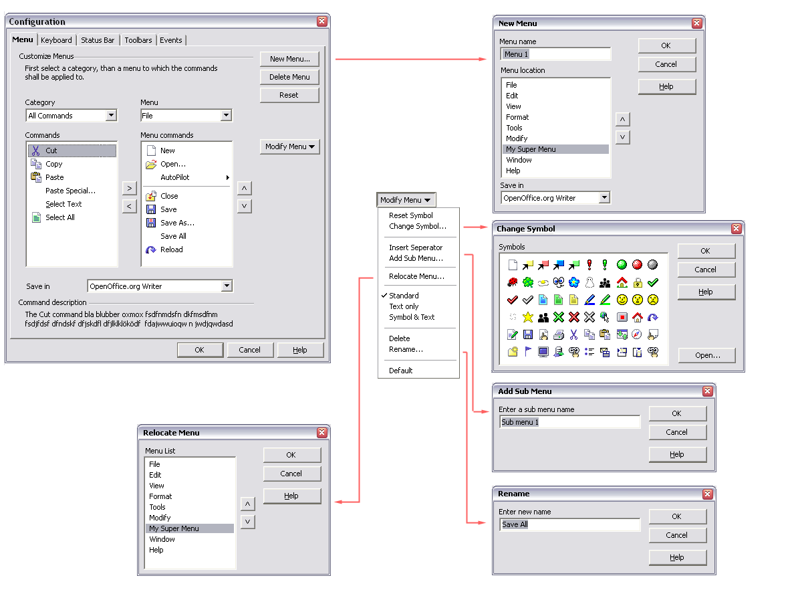
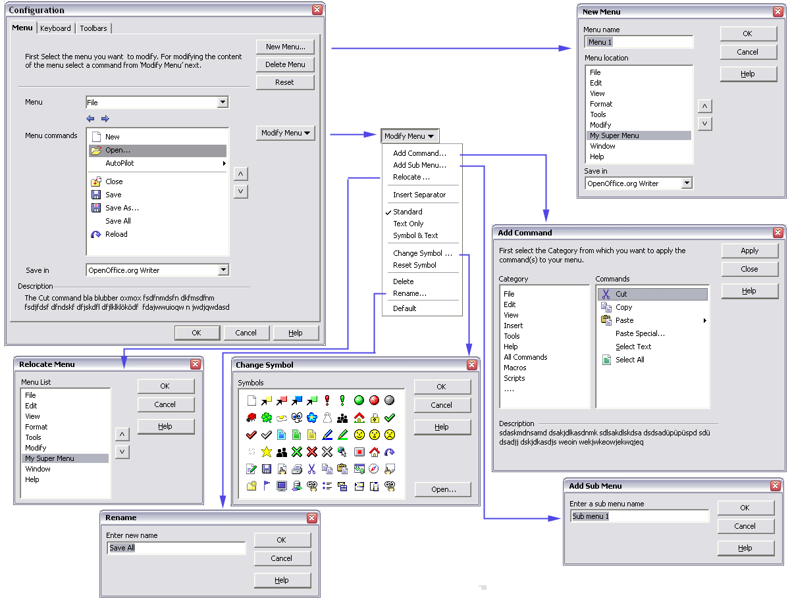

Customize Menus Mockups
|
|
Mockup A
|
|  |
Workflow Description
- The user uses the Menu and Category combo boxes to control
what is listed in the Commands and Menu Commands lists.
- The Menu combo box lists all of the currently available
menus and their submenus (File, File | New, File | AutoPilot etc.)
- The Command combo box lists all of the available command
types (File commands, Edit commands, Scripts etc.)
- The Save In conbo box controls where the menu is saved (for
all OpenOffice.org Writer documents, or just the current document)
- The New Menu/Delete Menu buttons allow you to create a new
menu
- The Modify Menu button allows you to modify the currently
selected menu item.
- You use the ">" button to add the currently selected
entry in the Commands list to the Menu commands list
- You use the "<" button to remove the currently selected
entry in the Commands list
- You use the up and down arrow buttons to move the currently
selected menu item up and down in the Menu commands list
- You use the Modify Menu.../Relocate Menu... button to move
the currently selected entry in the Menus combo box
|
Mockup B
|
|  |
Workflow Description
The workflow is the same as in Mockup A, except that the Category and
Menu combo boxes are placed directly above the lists they control.
Also the New Menu dialog and Relocate Menu dialogs share a similar
style.
|
Mockup C
|
|  |
Workflow Description
In this version of the dialog, the action of organising menus is
separated from the action of choosing commands in an attempt to
simplify the Menu tab.
The Menu combo box and Menu commands list are in the main Menu tab and
work as described in Mockup A.
An extra Add Command... option is added to the Modify Menu... combo
button which brings up a seperate Add Command dialog with the Category
and Commands lists.
|